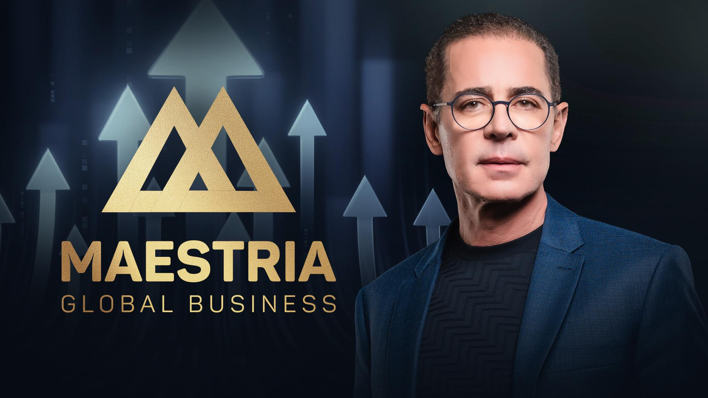
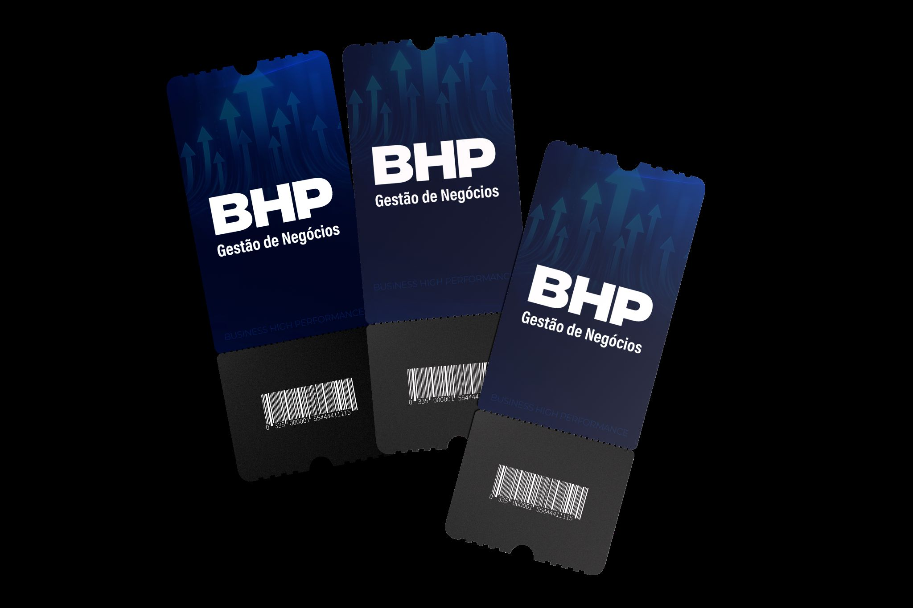
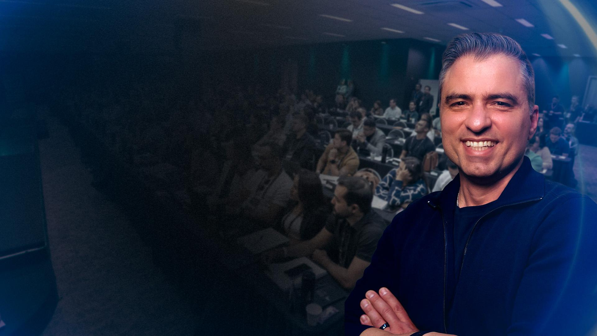
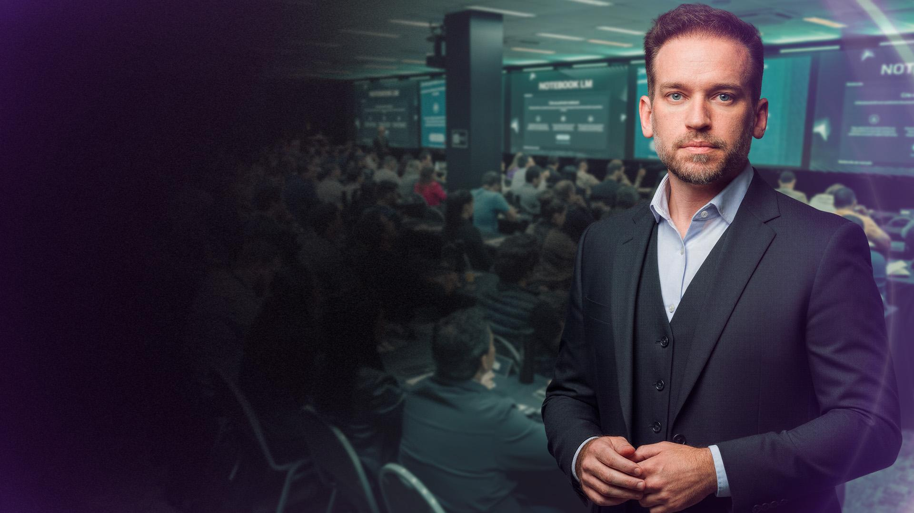
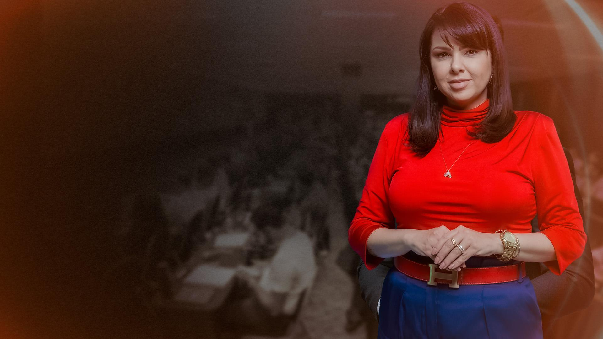
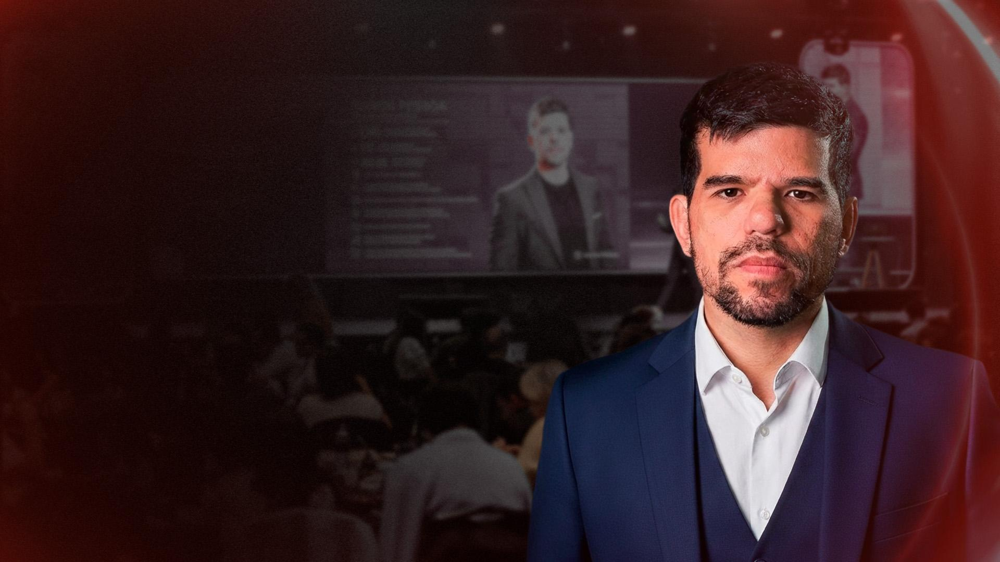
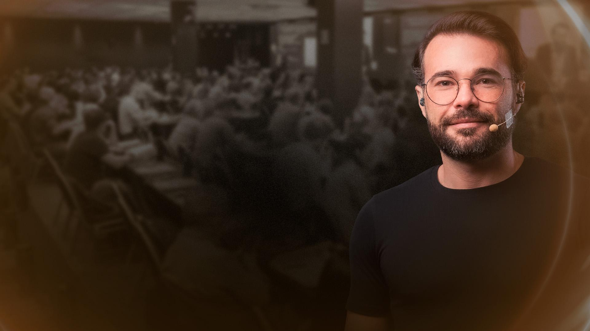

O mastermind oficial da Febracis: 12 meses com Paulo Vieira, experts e diretores.
Quem domina o produto vende um ecossistema de R$ 275 mil. Quem não domina, vende "mais uma mentoria".
A Maestria Global Business é o mastermind oficial da Febracis: o programa de mais alto nível da casa, para empresários que querem escalar com estrutura.
12 meses de mentoria premium com Paulo Vieira, experts e diretores Febracis — com imersões no Brasil e no exterior.
"ESCALE O SEU NEGÓCIO E CONQUISTE O MAIS ALTO NÍVEL DE RESULTADO EMPRESARIAL COM PAULO VIEIRA E DIRETORES FEBRACIS."
Rede de unidades Febracis pelo Brasil + unidades internacionais em Boston, Lisboa, Luanda e Orlando — a dimensão "Global" é real, não marketing.
"Mais do que uma mentoria ou encontros pontuais, é um ECOSSISTEMA CONTÍNUO de desenvolvimento empresarial."
Se o cliente enquadrar a Maestria na caixa errada, ele compara com o preço errado.
"Deixa eu te corrigir uma expectativa: a Maestria não é um curso, nem uma mentoria comum. É um ecossistema contínuo de desenvolvimento empresarial — durante 12 meses você tem Paulo Vieira, cinco frentes táticas e uma rede do seu nível trabalhando o seu negócio."
Quando o cliente entende a categoria certa, ele para de comparar com "mentoria de R$ 10 mil" e passa a comparar com conselho + consultoria + rede + formação do time — juntos.
A empresa cresce sem estrutura: cada mês uma crise nova, escala que ameaça quebrar a operação.
O empresário não tem ninguém do mesmo nível para trocar — decide tudo sozinho, sem contraponto.
O dono virou o funcionário mais caro da empresa: apaga incêndio o dia inteiro e não sobra tempo para liderar.
Escolhas estratégicas de milhões tomadas no achismo, sem um conselho qualificado por perto.
Sem rede nacional e internacional de alto nível, as melhores oportunidades passam longe.
A equipe corre muito e avança pouco, porque falta direção estratégica vinda de cima.
Pare de vender "encontros com Paulo Vieira". Venda o empresário fora da operação, escalando com estrutura.
A numeração é a mesma do pitch oficial. Apresente sempre nesta ordem.
Estratégia de crescimento construída com Paulo Vieira e especialistas — a espinha dorsal da jornada.
Sala com os maiores empresários do Brasil e região; convidados a nível nacional.
Pontes com ecossistemas globais — Boston, Lisboa, Luanda, Orlando e o Interbusiness.
Imersões presenciais, evento anual com Paulo Vieira e vivências de altíssimo padrão.
Direcionamento contínuo: o empresário nunca fica sem saber qual é o próximo passo.
Não é uma lista de benefícios. É uma jornada que INTEGRA as cinco frentes durante 12 meses.
Visão e plano de crescimento no mais alto nível, com Paulo Vieira e especialistas por trás de cada decisão.
Encontros táticos que descem a estratégia para o chão da empresa: gente, IA, comercial, marketing.
Imersões presenciais, evento anual exclusivo e padrão de entrega à altura de quem investe alto.
Interbusiness Internacional e a rede Febracis em Boston, Lisboa, Luanda e Orlando.
Só empresários e líderes de alto nível na sala — a rede vira ativo de negócio.
Cada pilar responde a uma dor do slide anterior. Diagnóstico primeiro, pilar correspondente depois.
O ativo central da Maestria — e a pergunta que TODO cliente vai fazer.
Mentoria direta com Paulo Vieira para desenvolvimento estratégico: 9 encontros estratégicos no ano, Mente Mestra (HotSeat), 2 encontros online ao vivo e o evento presencial premium anual.
Acesso contínuo ao criador do Método CIS é escasso por definição. Não existe outro produto Febracis com um ano inteiro de proximidade com Paulo Vieira.
Online e ao vivo, via CursoEduca. É onde o empresário define onde a empresa vai crescer, com o criador do Método CIS conduzindo a visão do negócio.
Gente e Gestão · IA · Estratégia · Comercial · Marketing. É onde a visão vira plano executado — cada área com um especialista de referência nacional.
"Um encontro por mês, o ano inteiro: estratégia com o Paulo, execução com os especialistas. Sua empresa nunca mais fica três meses sem direção."
3 encontros presenciais de 3 dias com Diretor Febracis, mais o acompanhamento de trainers Febracis durante a jornada. Profundidade que reunião online não entrega.
O empresário senta na cadeira, expõe o desafio real do negócio e recebe o conselho da sala inteira + Paulo Vieira. É o conselho consultivo que ele nunca teve.
2 encontros online ao vivo com Paulo Vieira + grupo fechado de WhatsApp: a rede funciona nos 365 dias, não só nos eventos.
"Entre um encontro e outro, você tem um grupo com os maiores empresários do país no seu bolso."
A frente 03 (Conexões Internacionais) materializada em uma experiência única no ano.
O INTERBUSINESS INTERNACIONAL é o evento anual da Maestria: uma imersão global de negócios em ecossistemas internacionais de inovação.
É a entrega que nenhuma mentoria local consegue copiar. O empresário sai do circuito doméstico e vê, in loco, como se constrói negócio nos polos mundiais de inovação — com a rede Febracis de Boston, Lisboa, Luanda e Orlando como porta de entrada.
A Maestria embute as principais formações Febracis — para o empresário E para quem ele indicar.
1 ingresso pessoal + 2 transferíveis. O empresário aprende a ler perfil comportamental — e leva sócios ou líderes junto.
1 ingresso pessoal + 2 transferíveis. A imersão de gestão da Febracis, inclusa no pacote.

1 ingresso pessoal + 2 transferíveis. Formação de gestão de pessoas para estruturar o time.
6 CIS presenciais no setor Black (pessoais): o empresário revisita o método no melhor lugar da casa, o ano inteiro.
2 ingressos CIS Global em 12 meses para presentear família, sócio ou executivo-chave.
São ingressos transferíveis: o empresário desenvolve o time e a família com o mesmo contrato. Isso desarma o "é caro para uma pessoa só".
A plataforma online exclusiva Maestria Global Business concentra os encontros (via CursoEduca), gravações e a curadoria central de conteúdo — a frente 05 da jornada em ação.
Acesso direto à turma entre os encontros: dúvida de negócio respondida por quem já viveu o problema — em horas, não em semanas.
Networking com os maiores empresários do Brasil e região, com convidados a nível nacional nos encontros e eventos.
Curadoria central de conteúdo e direcionamento: o empresário nunca fica perdido sobre o que estudar, implantar ou priorizar.
"Curso termina quando acaba a aula. Ecossistema funciona todos os dias — esse é o ponto da Maestria."
Prova de autoridade: cada encontro tático tem um nome de peso por trás. Decore os cinco.

IA — CGO na Birdie AI (Califórnia), IA por Stanford, autor de "IA para Líderes".

Marketing — ex-diretor Febracis, +R$ 200 mi em lançamentos digitais.

Comercial — Master Trainer, +32 mil horas de treinamento.

Inteligência Comercial — 3 empresas. "Ensina o que faz."

Estratégia — sistemas de gestão que funcionam sem o dono.
Como usar: ligue cada nome à dor — IA e eficiência → Vinicius; demanda → Galdino; vendas → Dani e Ramon; sair da operação → Zanini.
Empresário com negócio rodando e fome de escala. Priorize por este mapa.
Faturamento consistente, preso na operação, sem rede do seu nível, valoriza acesso a Paulo Vieira. Aluno CIS/BHP/FGPC ou empresário referenciado. Prioridade máxima.
Faturamento consistente, mas sem urgência. Eduque sobre o custo da inação e o crescimento caótico que vem aí.
Fome grande, estrutura pequena. Construa a jornada: CIS → BHP/FGPC → Maestria quando o negócio rodar.
Ainda não tem faturamento consistente. Não force: direcione para CIS e formações de entrada.
Quanto mais o negócio roda — e mais fome de escala o dono tem — mais perto da Maestria ele está.
Vender para o perfil errado queima a turma, gera cancelamento e destrói indicação.
Sem faturamento consistente não há o que escalar. A Maestria pressupõe empresa em operação — antes disso, a porta é o CIS.
Quem quer "conteúdo para assistir depois" não vai valorizar imersões, HotSeat e rede. Vai comparar preço com curso online — e a conta nunca fecha.
A jornada exige presença: encontros mensais, imersões de 3 dias, Interbusiness. Quem não topa o jogo não colhe o resultado.
Não descarte: redirecione. CIS para quem está começando, BHP/FGPC para quem precisa de gestão primeiro. Cliente na jornada certa vira comprador da Maestria em 12–24 meses — é a base quente de amanhã.
Os números que você precisa ter na ponta da língua na hora da ancoragem.
Interbusiness (R$ 4.600) + evento presencial premium (R$ 2.000) + 9 encontros estratégicos (R$ 60.000) + encontros táticos + plataforma + Assessment + BHP + FGPC + 6 CIS Black e mais. Some na frente do cliente: o número ganha peso quando é construído, não declarado.
50% OFF → 12x R$ 4.250 ou R$ 42.500 à vista, com segunda vaga também com 50% OFF. Link oficial da Maestria enviado na hora do fechamento.
Valores de referência de oferta em turma; confirme a condição vigente antes de ofertar.
Seis passos, com a fala pronta de cada um.
"Me conta: hoje a sua empresa cresce com estrutura ou cada mês é uma batalha nova?"
Rapport de empresário para empresário — direto na realidade do negócio.
"E quando você precisa tomar uma decisão grande, com quem você discute? Quem é o seu conselho?"
Expõe solidão do topo, operação e falta de direção — as dores que a Maestria resolve.
"O que eu vou te apresentar não é curso nem mentoria pontual. É um ecossistema contínuo de desenvolvimento empresarial, de 12 meses."
Enquadra a comparação antes de falar de preço.
"Durante um ano: estratégia com o Paulo Vieira, execução com especialistas, rede qualificada, conexões internacionais e experiências premium."
As 5 frentes em uma frase — cada uma ancorada na dor diagnosticada.
"Somando as entregas, isso passa de R$ 275 mil. O investimento integral é 12x de R$ 8.500."
Construa o valor antes do preço. Em turma, aplique a condição vigente (ex.: 50% OFF).
"As vagas da turma são limitadas pelo formato de mastermind. Vamos garantir a sua agora?"
Urgência ética real: sala pequena é característica do produto, não pressão inventada.
Você não vende encontros. Vende o empresário no mais alto nível de resultado — com a sala certa ao lado dele.